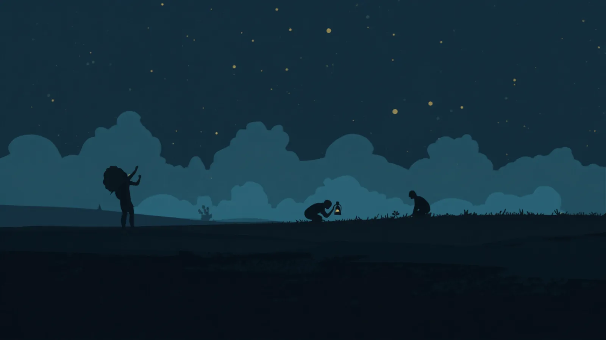
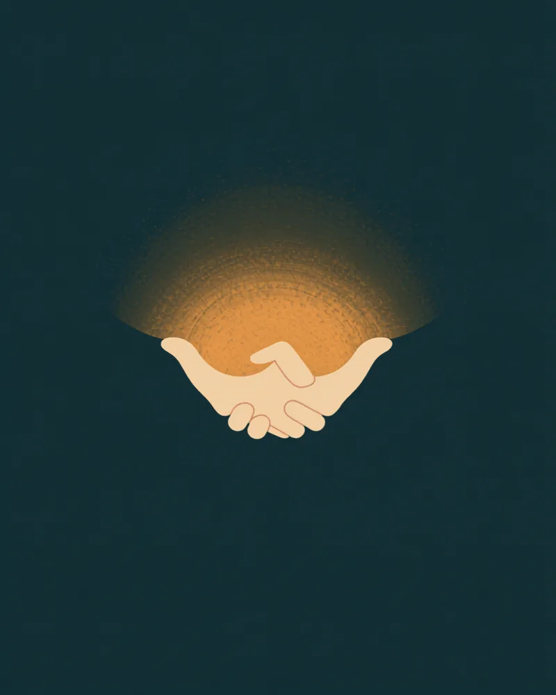
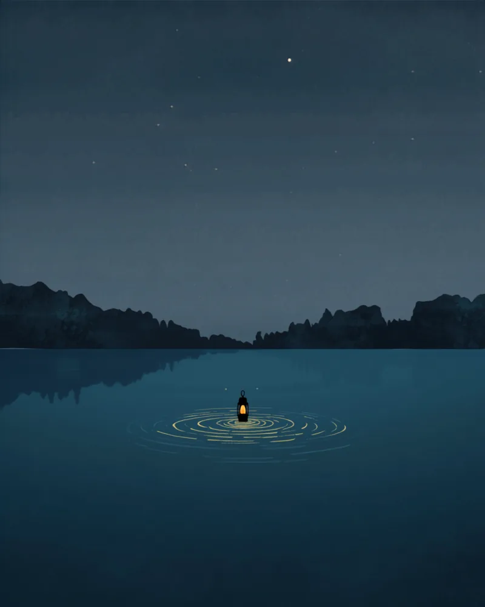
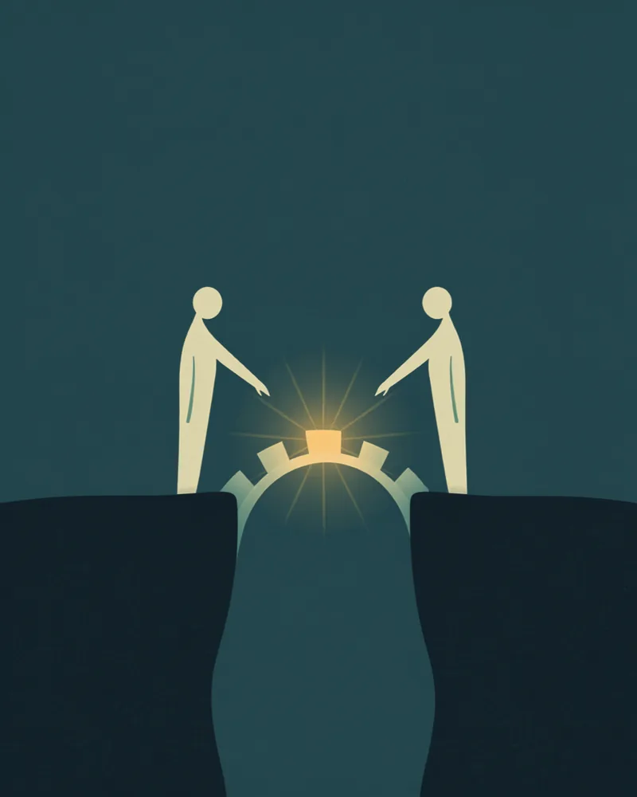
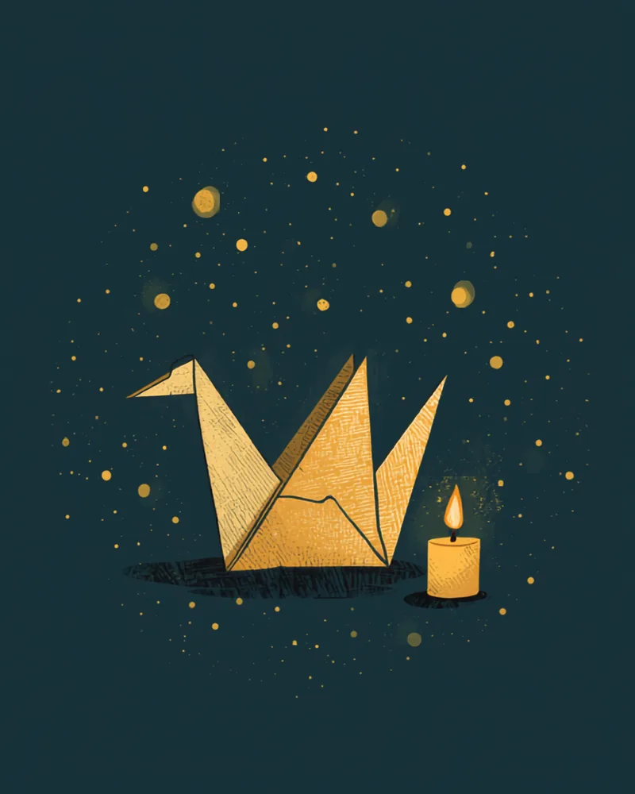

平和のための技法は、
世界中で発明されてきた。
どの土地にも、対立を暴力ではなく対話で代謝するための知恵があります。ここに灯した光は、そのほんの一部。この地球儀の上で、実践同士が互いに学び合い、コラボし合う——それがこのロードマップの風景です。


そして忘れてはいけないのは、国連をはじめ、平和のために人生を懸けてきた無数の機関と人々がいることです。停戦の交渉、難民の保護、地雷の除去、人道支援、教育——先を歩く人たちは、今日も世界のどこかで懸命に働いています。それでもなお、戦争は止められていない。これは彼らの力不足ではなく、平和が「一部の専門家に任せておけるもの」ではないことの証だと思うのです。制度の側の努力に、市民ひとりひとりの認知の側からの協力を足していく必要がある。私はその末席に、後発の一人として加わったばかりです。

125年の系譜が、指しているもの。
アルフレッド・ノーベルが遺言でこの賞に託したのは、国家間の友愛と軍備の削減、そして対話の場への貢献でした。以来125年、平和賞が照らす対象は、条約や停戦から、教育、証言と記憶、真実和解、民主主義の擁護へと広がり続けています。先人たちが口を揃えて指すのは、兵器や条約という「外側」だけではありません。

アルフレッド・ノーベル
平和賞の原点遺言でこの賞に託した条件は、国家間の友愛と、軍備の削減、そして平和会議の開催への貢献。ダイナマイトの発明者が最後に賭けたのは、武力ではなく、関係と対話でした。

ダライ・ラマ14世
1989 受賞世界の平和は、一人ひとりの内なる平和からしか育たない、と語り続けています。外側の軍縮の前に、内側の武装解除を。認知から始めるこのロードマップにとって、最も直接的な先達です。

ネルソン・マンデラ
1993 受賞敵と平和を築きたいなら、敵と共に働くこと。そうすれば敵はパートナーになる——27年の獄中の後、報復ではなく対話で国をつくり直した人の確信です。教育を「世界を変えるための最も強力な武器」とも呼びました。
マララ・ユスフザイ
2014 受賞「一人の子ども、一人の教師、一冊の本、一本のペンが、世界を変えられる」。銃撃されてなお、武器ではなく教育を選び続けている彼女の人生そのものが、この言葉の証明になっています。

日本被団協
2024 受賞広島・長崎の被爆者たちは、自らの痛みを語り続けることで「核兵器は二度と使われてはならない」という規範を世界に育ててきました。証言という対話の力が、最大級の暴力への抑止になっています。
友愛、内なる平和、敵と共に働くこと、教育、証言——つまり人の内面と関係の側です。この宿題を市民の日常サイズで引き受けようとするのが、このロードマップの試みです。
ここに灯した実践は、一つずつ「世界の対話技法図鑑」に収めています。
図鑑は明文化した収載基準に沿って選定し、各項目にエビデンス水準と出典を付けた、このロードマップの実践編です。
この地図は未完成です。あなたの町にも、きっと灯すべき光がある。世界の平和実現に向けての活動を、ぜひ教えてください。
実践編：世界の対話技法図鑑を見る →
映像で学ぶ：おすすめTED集（昔↔今の16本）→